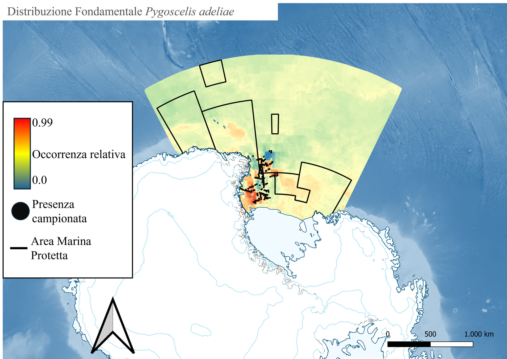
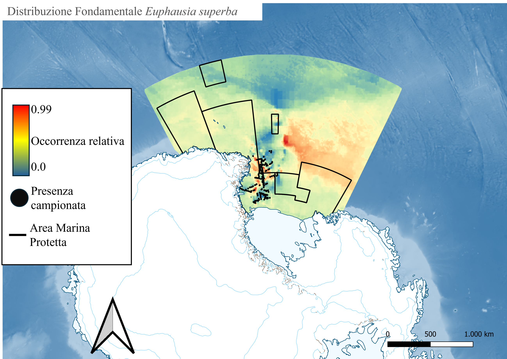
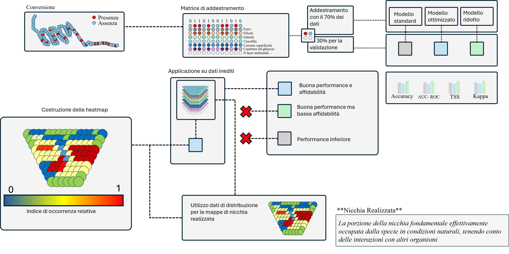

Based on predictive distributions and Machine Learning algorithms
Over the past two centuries, human exploitation and climate change have caused significant shifts in Antarctic marine biodiversity. Krill, a fundamental component of the marine food web, serves as a crucial ecological indicator.
This study leverages historical data from the Ross Sea to build distribution models using machine learning techniques, offering new insights into biogeography and ecological dynamics.
Here are some key images and maps generated during the study:
Adelie Penguin Distribution Map: Visualizing the spatial distribution of Adelie penguins based on collected data.
Krill Distribution Map: Predictive map highlighting krill density in the Ross Sea.
Workflow Diagram: Overview of the methodology and analysis pipeline used in the study.